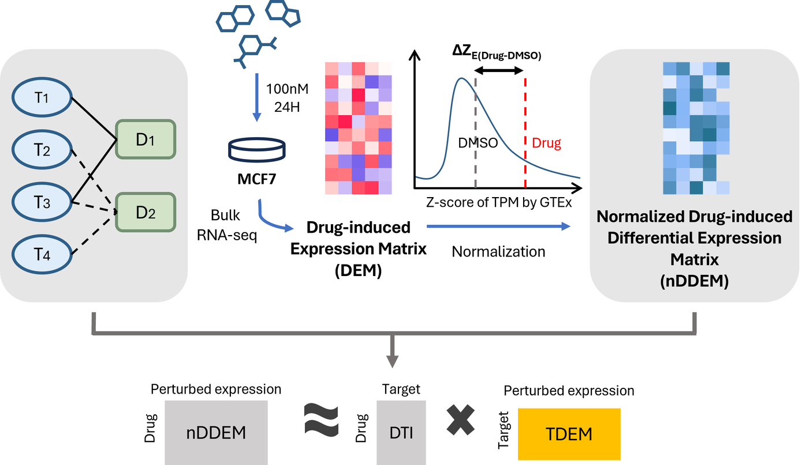

Drug-induced transcriptomes decompose additively into target-level effects, but only when expression is measured rather than inferred
A drug engages several proteins at once, so the profile it produces is a superposition. Almost every downstream use of drug-perturbation atlases assumes that superposition is additive and can be decomposed back into target-level effects. This work tests the assumption directly rather than relying on it.
- Polypharmacology
- Explainable AI

Problem
Large catalogues of drug-induced transcriptional responses are a standard instrument for asking what a compound does inside a cell. The reasoning is straightforward — a compound perturbs the cell, the cell rearranges its expression program, and that rearrangement carries information about mechanism.
It is also incomplete. A small molecule is not a selective instrument: it binds an intended target and generally several unintended ones, and the observed profile mixes whatever each of those engagements provoked. The genes that moved are visible; which binding event moved them is not.
Inferring mode of action, flagging off-target liability, matching signatures for repurposing — all of these require resolving that ambiguity, and almost all of them resolve it by assumption: that the contributions of a drug’s targets combine additively enough that a profile can be treated as their sum. It is a reasonable first approximation and it is seldom examined.
If it holds, the individual contributions become recoverable. A compound acting on targets A and B, another on B and C, and a third on A and C jointly constrain A, B and C in a way no single compound does. That is a deconvolution problem, structurally like separating a bulk profile into cell-type components — except the mixing weights are known from drug–target annotation rather than estimated.
Approach
TDEM is a target-by-gene coefficient matrix fitted so that summing the rows for a compound’s annotated targets reproduces its observed response. The estimator is deliberately simple — a single bias-free linear layer, the additive hypothesis written directly as an architecture. For compound d with target indicator td, the prediction is td⊤W.
The point is not the estimator. It is to use the estimator to test the additive assumption and establish the conditions under which the decomposition is possible at all.
- Expression source
- KMAP, in which every gene is measured by sequencing
- Cell line and dose
- MCF7 at 100 nM — the lowest available, to limit off-target binding
- Curation
- compounds with > 110 annotated targets removed; targets with < 3 compounds removed
- Final matrix
- 902 compounds × 836 targets × 11,468 genes
- Normalisation
- TPM → z-scores against 17,381 GTEx samples across 31 tissues, before differencing drug against vehicle
- Parameters
- 836 × 11,468 ≈ 9.6M, against 902 observations
With 9.6M parameters and 902 observations, any model free to fit nonlinear structure would fit noise instead. The linearity is a constraint chosen on purpose, not a limitation accepted reluctantly.
Four findings, two negative
1. Additivity holds, and does not decay with target count. On 115 compounds withheld from fitting, summing a compound’s annotated target rows predicted its observed response better than any single row and far better than summing an equally sized random target set.
| Prediction | Median cosine similarity |
|---|---|
| Sum of annotated targets | 0.225 |
| Best individual target | 0.289 |
| Median individual target | 0.206 |
| Sum of random target set | 0.143 |
The advantage was expected to erode as target count grew, since a compound engaging many proteins offers more opportunity for interaction between them. It does not — the margin over random is flat from one target to over a hundred (Spearman ρ = 0.011, p = 0.90). A median cosine of 0.225 also bounds the claim honestly: the additive model accounts for a component of the response, not the response.
2. The accuracy comes from the additive constraint, not from fitting. Against nine standard regressors given identical inputs, TDEM had the highest rank correlation with observed profiles (mean 0.379 against 0.355 for XGBoost and 0.100 for ordinary linear regression). Varying one factor at a time explains why.
| Configuration | Mean | Median |
|---|---|---|
| Initialization only, no training | 0.382 | 0.412 |
| Full model | 0.378 | 0.407 |
| Random initialization, trained | 0.231 | 0.242 |
| Per-gene OLS, no additive constraint | 0.117 | 0.091 |
Two conclusions follow, and the second is uncomfortable. The additive constraint contributes on its own: from random starting values the jointly fitted model reaches 0.231 where independent per-gene regression reaches 0.117, roughly a doubling attributable to structure. But gradient training contributes nothing — the closed-form initialisation alone scores marginally above the fully trained model, and 260 epochs of Adam leave held-out performance unchanged within noise.
This changes what the method is. Describing TDEM as matrix factorization learned by a neural network is accurate about the implementation and misleading about where the result comes from: what the procedure delivers is a closed-form per-target average requiring no optimization. Stating that plainly simplifies the account rather than undermining it.
3. The fitted rows carry the direction of regulation. For targets that are transcription factors, the genes they regulate have been catalogued independently of any drug experiment. Across 55 transcription factors, the annotated regulon was enriched at the low end of its own row (median NES −1.09, negative in 41 of 55, p = 1.1×10−5), with HDAC1 (−1.87), MYC, TP53, ESR1, NFKB1, NR4A1 and STAT3 significant after correction.
The negative sign is the substance. A TDEM row represents the consequence of inhibiting its target; curated regulons are predominantly activating; inhibiting an activator drives its targets down. A sign-agnostic overlap test could not have distinguished this from coincidence.
4. The rows do not reproduce observed knockdown transcriptomes. The most direct external test available fails. Across ten knockdown experiments in the same cell line the matrix was fitted on, the matched target placed at a median rank of 312 of 836 against 418 expected by chance — better than chance, but not usable. Median Spearman correlation with the matched row was +0.014, and directional agreement was absent.
This is reported as a failure of the comparison rather than a confirmation of the method. One interpretation contextualises it without rescuing it: pharmacological inhibition and genetic ablation are different perturbations — partial reversible occupancy over hours against complete protein loss over days — and knockdown signatures are known to carry substantial reagent-driven structure. That argument was available before the experiment was run, and was not committed to in advance.
5. Decomposability depends on how expression was measured. Running the identical pipeline on LINCS L1000, where 978 landmark genes are measured and roughly 12,000 are computationally inferred, produced a matrix that behaved very differently. Reconstruction accuracy survived; target recovery did not.
| Measure | Sequencing (KMAP) | Inferred (L1000) |
|---|---|---|
| Target recovery AUROC | 0.852 | 0.591 |
| Target recovery AUPRC | 0.524 | 0.152 |
| Reconstruction (Spearman) | 0.379 | 0.325 |
Since model, objective and curation were held fixed, the loss originates in the input. Asking how far a single compound agrees with itself across the two platforms makes the size of the problem concrete: median odds ratio 1.19–1.26 for overlap between differentially expressed gene sets. Within L1000, a drug and a genetic knockdown — two different perturbation modalities — overlap more strongly (odds ratio 2.47) than one compound does with itself across platforms. Platform contributes more to a drug-induced DEG set than compound identity does.
The proposed mechanism: inference from landmark genes reconstructs the component of a response shared with the reference transcriptomes while attenuating whatever departs from those learned correlations — and a target-specific signature is precisely such a departure. Deconvolution asks for the information that inference smooths away.
Modules and application. Consensus clustering partitioned all 836 targets into 22 modules, 21 of which were significantly enriched for interactions among their own members. The clearest is module 18, which contains all eleven histone deacetylases HDAC1 through HDAC11 — an entire enzyme family recovered from transcriptional consequence alone, with no protein annotation supplied. Applied to triple-negative breast cancer, the matrix prioritises 26 candidate targets whose predicted effects oppose the disease signature, four of them without prior association.
Citation
@article{sung2026tdem,
title = {Drug-induced transcriptomes decompose additively into
target-level effects, but only when expression is
measured rather than inferred},
author = {Sung, Jieun and Kim, Wankyu},
note = {Manuscript in preparation},
year = {2026}
}